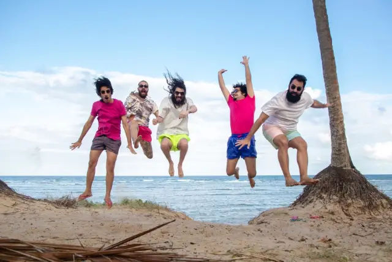

Bule fala sobre assumir os próprios erros em single “Sacanear”

Quantas vezes não culpamos os outros por problemas que nós mesmos causamos em nossas vidas e, simplesmente, não queremos admitir? Pensando nisso, e em virar essa chave, correr para longo do ódio e ter, antes de mais nada, uma reflexão a respeito das próprias atitudes, a banda de pop psicodélico, Bule, lançou o single “Sacanear“.
A canção começa e segue até chegar no refrão, de uma maneira tensa e perturbadora, com doses de drama. Após isso, ela deságua em momentos mais abertos e libertadores, prontos para serem dançados.
O axé music, a conga e os beats se unem ao surf music na canção, para poder dar o ritmo dançante e empolgante que tem.
Virando a chave
E se a princípio “Sacanear” fala de não perceber os próprios erros e ainda jogar a culpa nos outros, resultando, muitas vezes, em ódio, a sequência da canção reflete a respeito de seguir em frente sem questionar todos esses vícios comportamentais, ou se já é hora de virar a chave, viver em equilíbrio, com maturidade.
A própria Bule foi responsável pela produção do single, através da gravação, realizada em home studio.
Confiram o single “Sacanear” nos links abaixo e acompanhem o trabalho da Bule, através da página oficial da banda no Facebook e do perfil no Instagram.
AJUDEM O GAPP E SEUS GATINHOS PIFENTOS
Caros leitores e amigos. Saindo um pouco do assunto de arte e indo para outra arte. A arte de amar e ajudar. Não pedimos contribuições nenhuma para nosso site, mas queremos pedir que vocês contribuam, com qualquer quantia ou ação, com o pessoal do GAPP (Grupo de Apoio aos Pretinhos Pifentos).
Para ajudar, basta doar qualquer quantia para os seguintes meios:
PIX: gapp_contrapif@hotmail.com
Picpay: camila.dstefani
O GAPP é um projeto da Camila, da Giulia e da Fernanda, que tem como foco arrecadar dinheiro para gatinhos que tem a PIF. Essa é uma doença que atinge muitos dos gatinhos. Nem todos os contaminados desenvolvem os sintomas, porém o GAPP tem como meta ajudar os tutores dos que são acometidos pela PIF e tem suas complicações.
Para conhecerem melhor o trabalho do GAPP, acessem o perfil deles no Instagram (@gapp_contrapif). Lá tem as rifas que elas fazem para ajudar os bichanos, tem os casos e gatinhos que elas atendem e repassam o dinheiro.
Toda quantia é direcionada aos gatinhos que elas ajudam.
Quem não puder contribuir financeiramente, basta compartilhar o trabalho delas, curtir e comentar as postagens do GAPP no Instagram.
É fácil e rápido. Vamos ajudar!!!